Severity of quenching
Objective
To study the hardness of medium carbon steel samples and their microstructures under the following conditions:
As received,
Annealed,
Normalized,
Water quenched,
Ice quenched,
Oil quenched
Apparatus used:
Six medium carbon steel samples, Furnace at 910⁰C, Tongs, Rockwell hardness testing equipment, Beakers, Oil and ice quenching mediums, Optical Microscope, Polishing Machine with Abrasives, Belt Grinder, Abrasive paper, Flat Glass plate with Wooden framework, Electric Hot Air Blower, Cotton, Nital Reagent (etchant), Rockwell Hardness Testing Machine.
Description Eutectic Temperature : It is the temperature at which eutectic reaction occurs in a phase diagram. Eutectic Reaction:
Liquid → alpha + beta
(Here, alpha and beta are phases of a binary alloy composed of A and B where alpha is rich in A and beta is rich in B.)
Quenching : In materials science, quenching is the rapid cooling of a workpiece in a quenchant to obtain specific material properties. This is a type of heat treatment which prevents undesired low-temperature processes, such as phase transformations, from occurring due to extremely high rates of cooling.
Martensite : A hard and very brittle solid solution of carbon in iron that forms the main constituent of hardened steel is called martensite. It's microstructure is usually needle-like, thus depicting it's brittle nature.

 Note:
Note:Once all samples are cooled to room temperature, each sample is polished and microstructure is observed under a microscope as shown in the subsequent steps.
Obtain a flat surface on the specimens by belt grinding.


Support a polish paper of 1/0 fineness on a flat glass plate. Polish the specimens rubbing in forward direction only.
 1/0 Polish paper
Note:
1/0 Polish paper
Note:Move to the next finer paper (2/0 and 3/0) once the scratches on the specimen are uniform. While changing from one paper to another, the specimens and your hands should be cleaned free from the abrasive of the previous paper, and the specimen turned through 90°, so that the scratches from the previous paper are at right angles to the scratches from the next paper.
Finish polishing the specimens on 4/0 abrasive paper, wash hands and specimens.
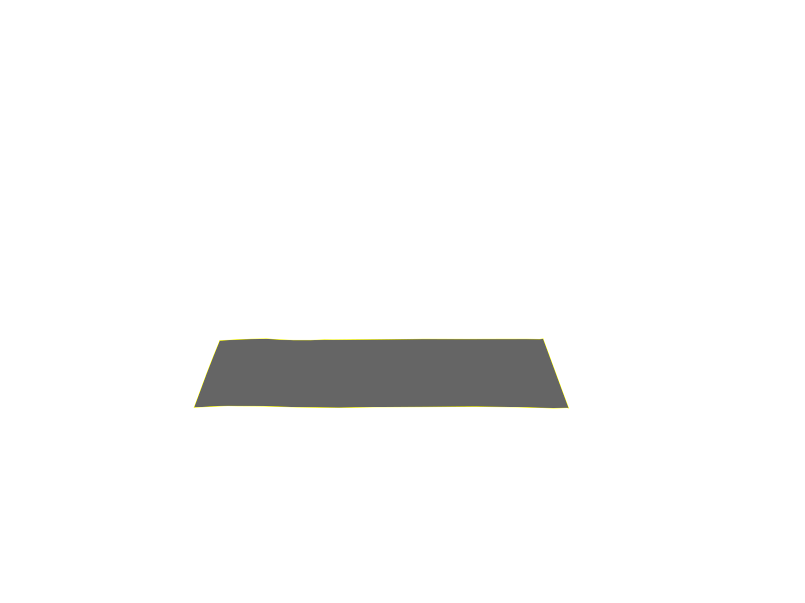
4/0 Polish paper
Do the fine polishing on the disc polishing unit.
 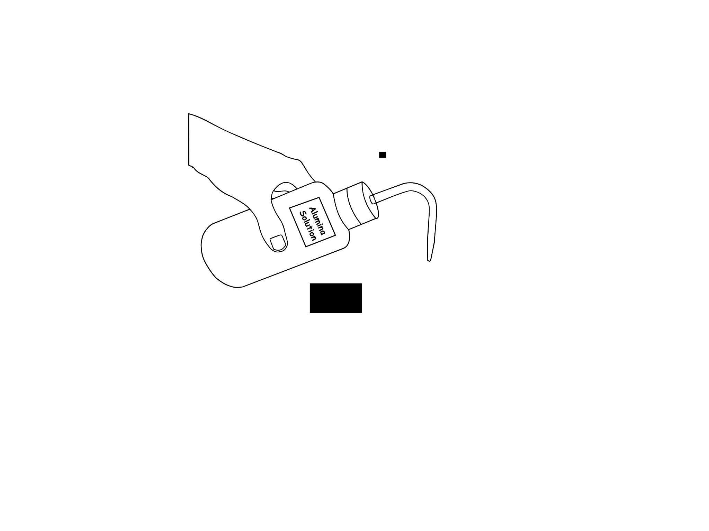
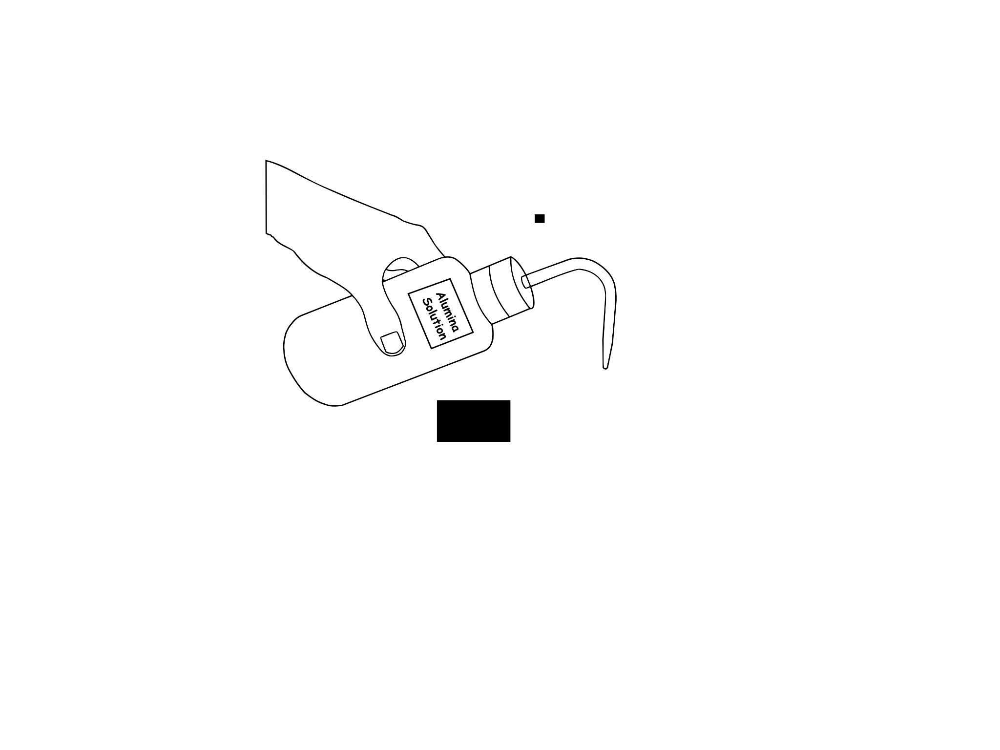
 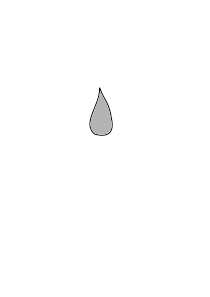
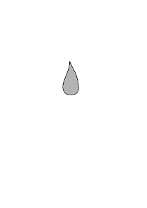


After fine polishing, clean off the polished surface of the specimens with water and dry it with an electric hot air blower.
Etch the specimens with 2% Nital reagent by swabbing for a few seconds. Wash and dry.

 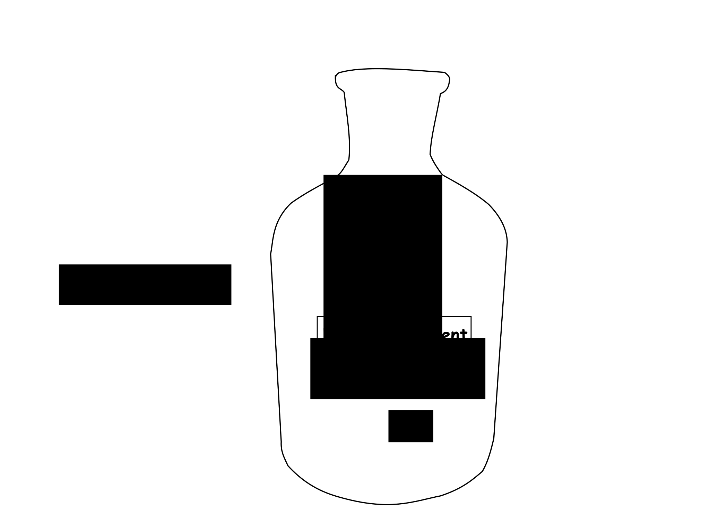
Note:Nital reagent : Nital is the name given to an oxidizing etchant solution composed of aqueous nitric acid and ethanol.
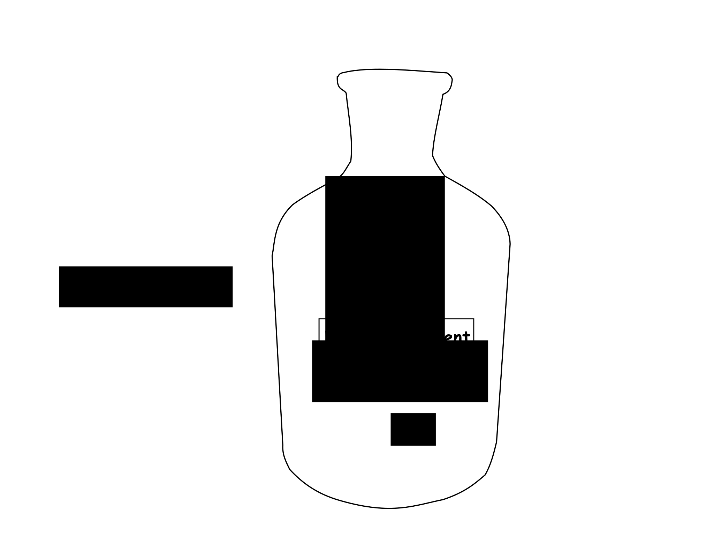
Note:Nital reagent : Nital is the name given to an oxidizing etchant solution composed of aqueous nitric acid and ethanol.
Examine the specimens under the microscope and observe the structural features.


 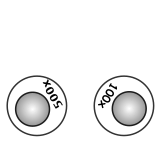
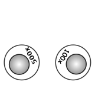
After noting the microstructural features of the samples, perform the Rockwell's Hardness Test using the Cone indentor for all six samples.
 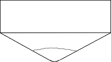
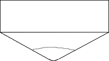
quenched Ice
quenched Oil
quenched Cone Indentor
The hand wheel is turned until the specimen is in contact with the indenter and the pointer of the smaller dial gauge reaches the RED DOT so that minor load of 10kg is applied.
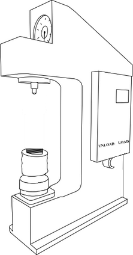 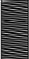 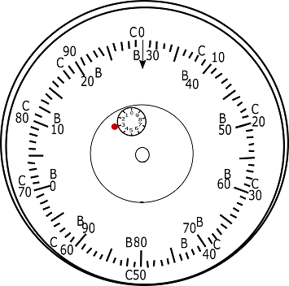Move the mouse on the
wheel to adjust
specimen height
Minor load of 10kg is applied
The major load is set & the motor is switched ON. The hand lever is kept in load position for 15 seconds. The reading is noted down using C-scale
 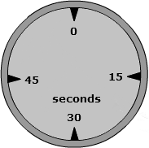
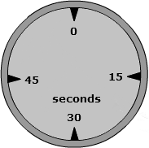
 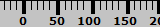
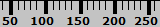
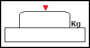
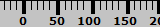
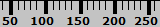
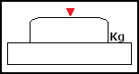
Rockwell Hardness number =
Rockwell Hardness number =
Click on the hand leverat 15 seconds to unload
Values are noted for all the six specimens.
| Sample | Quench method | Total Load P ( Kg ) | Scale Used | Rockwell Hardness number ( RHN ) |
| 1 | As received (none) | 150 kg | C | 15 |
| 2 | Annealed | 150 kg | C | 37 |
| 3 | Normalized | 150 kg | C | 41 |
| 4 | Ice quenched | 150 kg | C | 60 |
| 5 | Oil quenched | 150 kg | C | 55 |
| 6 | Water quenched | 150 kg | C | 51 |
Average Rockwell Hardness number =
Observe and relate the microstructural features and the obtained Rockwell Hardness Number.
- Untreated (As received) - 15 RC
- Annealed (Furnace cooled) - 37 RC
- Normalized (Air-cooled) - 41 RC
- Water quenched - 51RC
- Ice quenched - 60RC
- Oil quenched - 55RC